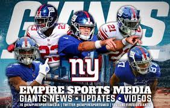
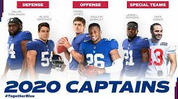
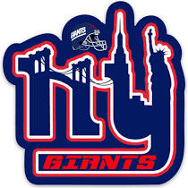

NYG Media
NYG Audio
NYG Video
NYG Media
From big hits to slick catches watch all your favorite highlights from the season and seasons past. From exclusive player interviews,coach gameplans and behind the scenes videos. You can find it all here in the Giants media Page.
 Learn more...NYG Gallery
View awesome pics of your favorite players making incredible plays or maybe just goofing around on the field and in practice. We capture some great moments fro you to view and share with the Giants community.
 Learn more...NYG Blog
From Giants bloggers like Dan The Man and Suzie Q they will always keep Gaints fans in the know and tell you hoe they really feel about their New York Giants wheather we like it or not. Fans like these keeps us on our game. We wont let them down because if we do we will here about it.
 Learn more...